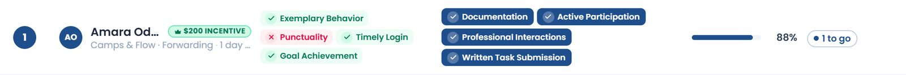

How the CRM decides each month's Top Performer and Lowest Performer, what every rating on the Review page is worth, what the optional controls on the Top Performer tab do, and how date filters change what you see.
The short version. Every person is scored against up to twelve criteria for one calendar month. Four criteria are read automatically from that month's Review, Attendance and Leaves sheets; the rest are confirmed by a manager. Score = criteria met ÷ criteria in play. The highest scorer at 80% or above is the Top Performer and earns the $200 incentive; the lowest scorer, when somebody clearly trails, is the Lowest Performer. Nothing crosses a month boundary: reviews, attendance, leaves, confirmations, switches and the roster are all judged for the month being viewed.
A review is about the month that has just finished — the sheet filled in during September judges August — so the Review page opens on the previous month.
| Source | Where it is entered (always for the month judged) | What it decides |
|---|---|---|
| Behaviour review | Review → Behavior tab | 1 · Exemplary Behavior |
| Performance review | Review → Performance tab (rating + percentage) | 9 · Goal Achievement |
| Attendance | Attendance → Day Sheet, every day of the month, judged against the Expected Login / Logout on the Staff page | 2 · Punctuality, 4 · Timely Login |
| Leaves sheet | Staff Management → Leaves; rows dated in the month, the Half Day and Late Login columns | Count against 2 and 4 |
| Manager confirmations | Top Performer tab, the chips beside each name — saved per month, shared with every manager | 3, 5, 6, 7 and any of 8, 10, 11, 12 switched on |
| Month settings | Top Performer tab — optional-criteria switches and the Goal Achievement target, saved per month | Which criteria are in play; the % bar for 9 |
| Rating | Criterion 9 | Rule |
|---|---|---|
| Excellent | Met | On the rating alone; the % is not needed. |
| Good | Met | On the rating alone, same as Excellent. |
| Average | By % | Met only if the percentage reaches the month's Goal Achievement target (80 unless changed). Average · 81% is met; Average · 74% is not. |
| Below Average | By % | |
| Poor | By % | |
| No row / blank | ? Unknown | Counted as not met. |
The percentage is also the first tie-break in the ranking, so enter it for everyone. Notes are for the record only.
| Rating | Criterion 1 | Rule |
|---|---|---|
| Consistent Performance | Met | Any rating other than Low Performer meets it. The five positive wordings are equal for the calculation — they describe the person, they do not score differently. |
| Good Standing | Met | |
| Meets Expectations | Met | |
| On Track | Met | |
| Satisfactory | Met | |
| Low Performer | Not met | Criterion 1 always applies, so a Low Performer can never reach 100%. |
| No row / blank | ? Unknown | Counted as not met. |
The Department tab is the department scorecard; it does not feed the Top Performer. Names are picked from the Staff roster — a row whose name matches nobody is not scored for anyone.
| # | Criterion | Checked by | Exact rule |
|---|---|---|---|
| 1 | Exemplary Behavior | CRM · Behaviour tab | Behaviour rating for the month is anything but Low Performer. |
| 2 | Punctuality | CRM · Attendance + Leaves | No day of the month ended before the expected logout (one minute early counts) and no Half Day row on Leaves. Needs at least one day with a login and an expected logout to judge; otherwise unknown. |
| 4 | Timely Login | CRM · Attendance + Leaves | No login in the month after the expected login (no grace) and no Late Login row on Leaves. Needs at least one day with a login and an expected login; otherwise unknown. |
| 3 · 5 6 · 7 | Documentation · Active Participation · Professional Interactions · Written Task Submission | Manager | Met when ticked for the person for this month. Nothing in the CRM records these, so nothing is assumed. |
| 9 | Goal Achievement optional · on by default | CRM · Performance tab | Rating Excellent / Good, or percentage ≥ the month's target (80 by default). |
| 8 · 10 11 · 12 | Continuous Learning · Collaboration · Innovation · Feedback Acceptance optional | Manager | Count only when switched on for the month; then met when ticked per person. |
Expected hours must be on the Staff page. Without an Expected Login and Logout, criteria 2 and 4 are unknown for the person (counted as not met). With the default 8 criteria the most they can then score is 6/8 = 75% — under the 80% bar, so they cannot be Top Performer.
Equal scores share a rank number (1, 2, 3, 3, 3, 6…); the tie-breaks decide only the printed order.
Eligible is different: every criterion in play met, 100%. The Top Performer is named at 88% even when nobody is Eligible; anyone Eligible is necessarily the Top Performer.
The lowest score of the month (everyone tied at it) — but only when all three hold:
Otherwise the red card reads "No one behind the rest".
A missing review can make someone the Lowest Performer — no rows and no attendance is 0%. Check the "Have a review this month" tile before announcing.
Everything here is saved for the month on the picker and shared with every manager, except the two display preferences.
| Control | What it does |
|---|---|
| Additional criteria switches (8–12) | Put a criterion in or out of play for the month. Off = greyed out, not counted, not tickable. On = added to everyone's total, so every score drops until it is confirmed — set the switches before ticking. Goal Achievement (9) is on by default and read from the Performance tab; 8, 10, 11, 12 are off by default and confirmed by chip when on. |
| Goal Achievement target | Number under the switches, default 80 (0–100). The percentage a Performance row must reach for criterion 9 when the rating is Average / Below Average / Poor. Excellent and Good are unaffected. |
| Confirmation chips (per person) | One chip per manager criterion beside each name. Tap to credit it for that person this month, tap again to take it back; filled navy = credited. Saved a moment later — the word beside the ranking title reads Saved · Saving… · Not saved. |
| Credit-all chips (column header) | Credit one criterion to everyone currently shown in one tap; if everyone shown already has it, the tap removes it from all of them. Respects the search box and the filter, so narrow the list first. |
| Re-rank | The first tick holds the order on screen so the person you ticked does not jump away; ranks and scores still update in place. When the order underneath has changed, a Re-rank button appears — press it when you have finished ticking. A month change also restores the true order. |
| Search | Narrows the list by name or department. Changes nothing but who is listed (and who the credit-all chips apply to). |
| Only people who pass every automatic check | Keeps only people whose CRM-checked criteria (1, 2, 4 and 9 if on) are all met — the shortlist the Eligible people will come from. |
| Hide guide · fold panels | Display preferences remembered in this browser only. |
| PDF (page header) | Exports the ranking exactly as shown — criteria in play, every verdict, scores, incentive mark — as the month's record. |

A date filter never changes data or results; it chooses which month's answer a page shows. The $200 and Low badges beside a name always belong to one month, and each page takes that month from its own filter:
| Page | Its date filter | The month the badges and headline names speak for |
|---|---|---|
| Review (all tabs) | Month picker; opens on the month before now. | The month picked. The Top Performer tab re-reads that month's reviews, attendance, leaves, switches and ticks; the name cells on Performance / Behaviour follow. |
| Staff Management (Staff, Leaves, Salaries) | Month picker on Leaves / Salaries; opens on the month before now. | That month — also for the Top Performer preview panel and the roster badges on the Staff tab. |
| Attendance — Day Sheet | A single date; opens on today. | The month that date falls in. |
| Attendance — Staff Summary | Month picker; opens on the current month. | The month picked. |
| Attendance — Staff Reports | From / To dates with presets. | The month the range starts in. |
| Dashboard — Staff view | Month picker; opens on the current month. | The review month on the cards — one month behind the picker, like the ratings beside it. |
| Queues, Users, sidebar | None. | The month before now (the month a review is written about). |
The roster is judged as of the month: someone marked Inactive today is still ranked in a past month that holds evidence for them (an attendance day, a Leaves row or a review); Active and On-leave staff are always ranked, at 0% if nothing was recorded. The current month is provisional: the picker allows the month in progress, which then rests on partial attendance and usually no reviews — most verdicts are ? and a Low badge can already appear from attendance alone. Treat it as a preview until the reviews are in.
| # | Criterion | Verdict | Evidence |
|---|---|---|---|
| 1 | Exemplary Behavior | Met | Meets Expectations |
| 2 | Punctuality | Not met | Out 17:30 vs expected 18:00 — 1 early logout of 1 |
| 3 | Documentation | Met | Confirmed |
| 4 | Timely Login | Met | In 09:00 vs expected 09:00; no Late Login row |
| 5–7 | Participation · Professional · Written | Met | Confirmed |
| 9 | Goal Achievement | Met | Excellent · 95% — on the rating |
| 7 of 8 = 88%: over the bar and highest in the month → Top Performer, $200. Not Eligible (100%) because of the early logout: "1 to go". | |||
Juno Castellanos: Behaviour Low Performer (1 not met), Performance Poor · 67% (under the target, 9 not met), no attendance day (2 and 4 unknown), nothing ticked. Noor Haddad and Tomas Varga: no review rows, no attendance — every criterion unknown or unticked. Two or more judged, others scored better, 0% is under 80% → all three are named.
Corin Whitlock 38% (3 of 8): Behaviour, Punctuality and Goal Achievement (Average · 81% ≥ 80) met; login 09:14 vs 08:30 fails Timely Login; no chips. Six people share rank 3 at 25%, ordered by the tie-breaks: the two at 95% print above the three at 88%, and among those Benicio Sarto prints last for his 7 minutes late. Kwame Boateng is Inactive today but has an August Leaves row and reviews, so he is ranked for August. Juno's Leaves Late Login row does not fail criterion 4 on its own: a Leaves mark only counts against a month that has attendance to judge.
Fairness rules of thumb. The same rating means the same thing for everyone — Good and Excellent both meet Goal Achievement; every Behaviour wording but Low Performer meets Exemplary Behavior. A criterion nobody ticks is a criterion nobody meets, so a switched-on criterion must be confirmed for everyone who deserves it. The month is the unit: what happened in July is never read into August.
| Mark | Meaning |
|---|---|
| ♛ $200 incentive · $200 | Top Performer of the month the page shows (hover for the month). |
| ↓ Low performer · Low | Lowest Performer of the month the page shows. |
| ✓ Eligible | Every criterion in play met — 100%; row tinted green, rank badge becomes a crown. |
| ● 2 to go · ● 5 to go | Criteria still lacking; navy when two or fewer. |
| ✓ ✕ ? Criterion | CRM-checked: met · not met · nothing recorded to judge (counts as not met). Hover for the evidence. |
| ✓ Criterion · Criterion | Manager criterion credited · not yet confirmed. |
| Number / word | Where it comes from |
|---|---|
| 80% | The bar for the Top Performers list and the ceiling for naming a Lowest Performer. Fixed. |
| $200 | The month's incentive, printed on the green badge. Fixed. |
| Target 80 | Goal Achievement target, editable per month on the tab. |
| 8 criteria | 1–7 plus Goal Achievement, by default; each optional criterion switched on adds one for everybody. |
| Saved · Saving… · Not saved | Whether the month's ticks and switches reached the server; "Not saved" means the last change is only in this browser. |